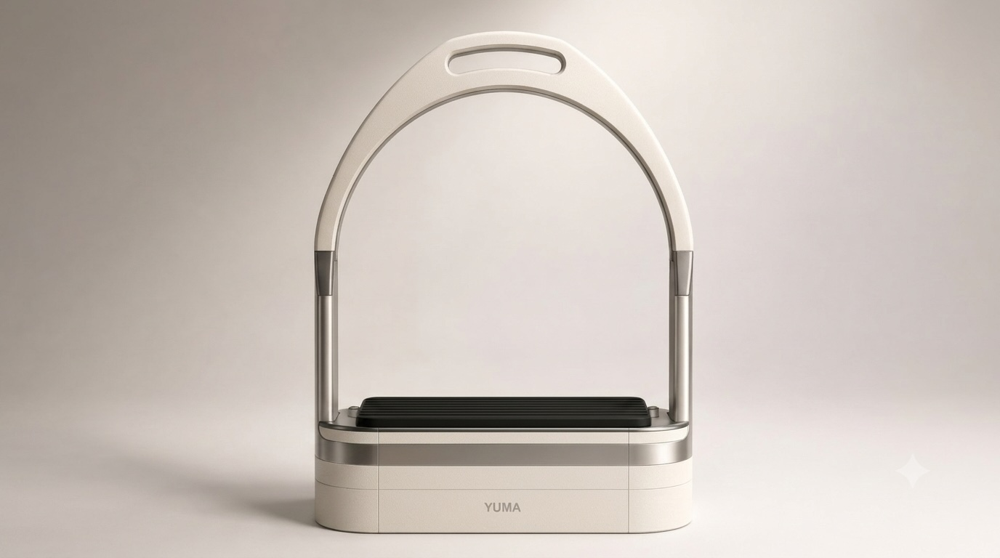
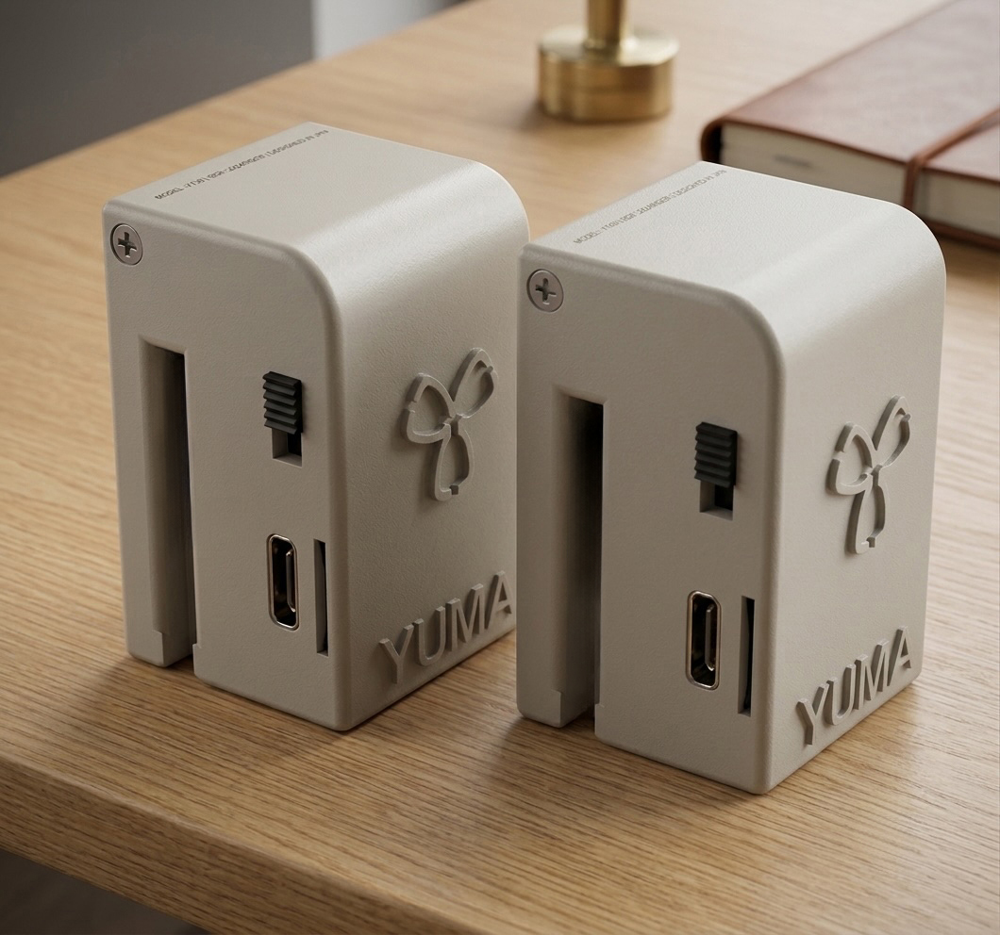
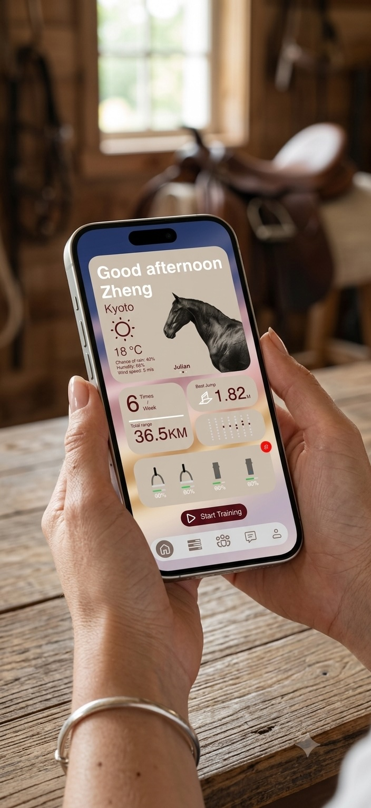
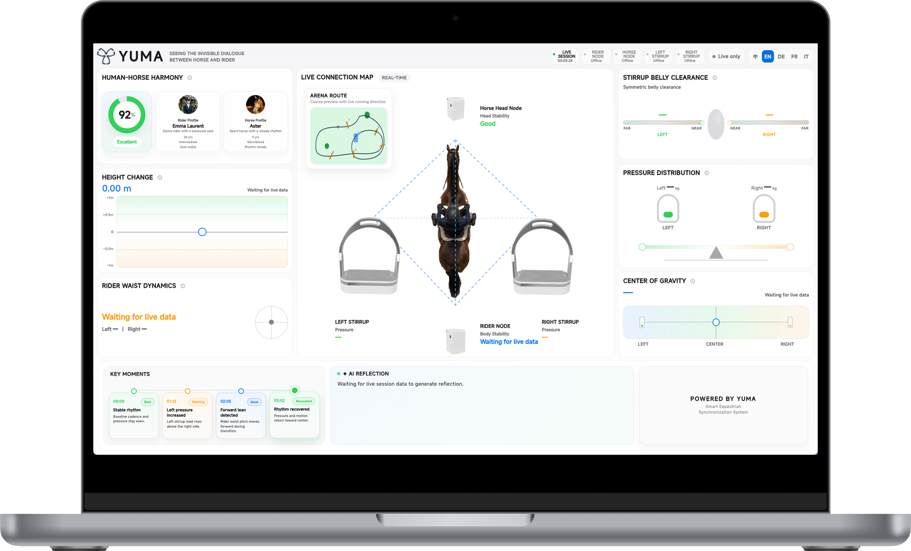

01
Prepare
Check horse information, device status, battery level, and weather before starting a riding session.
- Horse Profile
- Device Ready
- Start Session
A wearable sensing system that transforms rider-horse interaction into measurable insights.
YUMA reveals these hidden signals and turns them into clear training insight.
Where rider and horse first connect.
Capture pressure, balance, weight distribution, and lower-body rhythm directly from both feet. Designed to feel familiar in the saddle while revealing the subtle signals hidden inside every ride.

Designed to disappear during riding.
Lightweight rider and horse nodes continuously track posture, body orientation, and movement rhythm. Together they create a shared understanding of both partners throughout every training session.

Everything begins before the ride.
Prepare every training session with confidence. Check horse information, device status, weather conditions, battery levels, and session readiness before riding. After training, quickly review important moments and AI reflections.

See what riders cannot feel.
Transform live sensor streams into intuitive visualizations of synchrony, posture, balance, and pressure distribution. Built for riders, coaches, demonstrations, and reflective review after every training session.

YUMA fits naturally into every stage of training—
before, during and after every ride.
Check horse information, device status, battery level, and weather before starting a riding session.
Ride naturally while wearable sensors continuously capture movement, pressure, balance, and synchronization.
Replay the session through synchronized visualizations, metrics, and important riding moments.
AI summarizes key moments and helps riders and coaches better understand every training session.
One ride. Four simple steps. Continuous improvement.
Experience how YUMA supports a complete riding session—from preparation and wearable sensing to live visualization and AI-powered reflection.
YUMA turns riding data into calm, human-readable observations that help riders and coaches understand training habits without feeling judged.
You tended to place more weight on the left stirrup during transitions.
Synchronization improved after the second minute.
Upper body stability remained strong throughout the session.
A short balance disturbance appeared before the jump approach.
AI supports reflection while keeping the rider, horse, and coach at the center.
Improve body awareness, balance, and confidence through objective feedback.
Support coaching decisions with measurable data and clearer post-session review.
Build long-term training records and create a more professional training experience.
YUMA brings sensing, live feedback, and AI-assisted reflection into everyday riding practice. It creates a new layer of measurable awareness for riders, coaches, and equestrian teams.
We are looking for riders, coaches, equestrian clubs, and partners interested in testing the next generation of reflective riding technology.